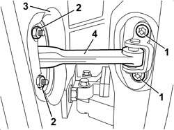

7010A28 REAR SIDE DOOR OPENING LIMITER - R.R
- Path
- Procedures > 70 FITTINGS > 7010 PASSENGER COMPARTMENT REAR SIDE DOORS > 7010A REAR SIDE DOOR ASSEMBLY > 7010A28 REAR SIDE DOOR OPENING LIMITER - R.R
- Kind
- repair procedure (removal / refitting; the operation number is the code)
- Applies to
- all engines; all production periods
- Interactive page
- https://sloeber94.github.io/elrnDB/alfa/159/en/#/939011160
Applies to: all engines; all production periods
 Removing
Removing
 Refitting
RefittingOp. 7010E62 REAR DOOR INNER REAR PANEL (ONE) LH OR RH - R R
Op. 7010E38 REAR SIDE DOOR INTERIOR HANDLE-R R
Op. 7010E10 REAR SIDE DOOR INNER PANEL - R.R. OR REPLACE
Op. 7010A08 REAR SIDE DOOR INTERIOR SUPPORT FRAME - R.R. WITH DOOR PANEL REMOVED
1. Unscrew the bolts on the body.
2. Unscrew the bolts on the door.
3. Release the seal.
4. Remove the limiter by extracting from the door frame.

Applies to: all engines; all production periods
Refitting
Removing- Check that the limiter and the seal are not damaged.
- Place the limiter in its seat.
- Tighten the nuts to the body to the recommended torque.
Component | Fastening | dia | Value (daNm) | Validity |
|---|---|---|---|---|
DOOR CHECK STRAP | Nut | M6 | 0.7 ÷ 1.1 |
- Tighten the bolts to the body to the specified torque.
Component | Fastening | dia | Value (daNm) | Validity |
|---|---|---|---|---|
DOOR CHECK STRAP | Bolt | M6x22 | 0.7 ÷ 1.1 |
- Fit the seal.
- Check the operation of the limiter.
Op. 7010A08 REAR SIDE DOOR INTERIOR SUPPORT FRAME - R.R. WITH DOOR PANEL REMOVED
Op. 7010E10 REAR SIDE DOOR INNER PANEL - R.R. OR REPLACE
Topics linked from this page (5)
- 7010A08 REAR SIDE DOOR INTERIOR SUPPORT FRAME - R.R. WITH DOOR PANEL REMOVED
- 7010D38 REAR SIDE DOOR MANUAL WINDOW OPENING MECHANISM HANDLE/RING NUT (ONE), LEFT OR RIGHT - R.R
- 7010E10 REAR SIDE DOOR INNER PANEL - R.R. OR REPLACE
- 7010E38 REAR SIDE DOOR INTERIOR HANDLE-R R
- 7010E62 REAR DOOR INNER REAR PANEL (ONE) LH OR RH - R R